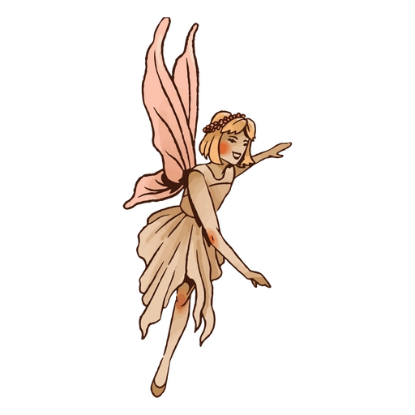

HADA DEL BOSQUE
Sigues al hada mientras revolotea entre los árboles. Te lleva a un claro oculto donde un círculo de hongos brillantes emite una luz púrpura. El hada se posa en el centro y te hace señas para que entres.
"Este círculo te mostrará tu destino", dice con voz melodiosa. "Pero debo advertirte: ver el futuro tiene un precio. Podrías no gustar lo que ves."
El hada extiende su mano, ofreciéndote polvo brillante.
